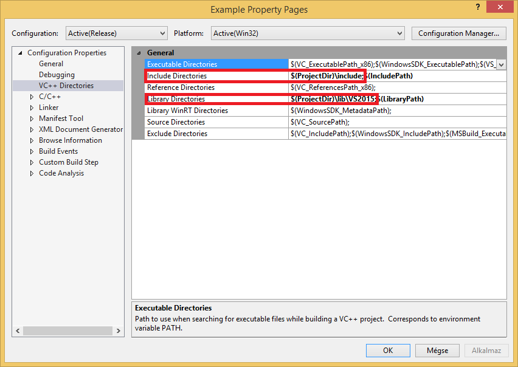
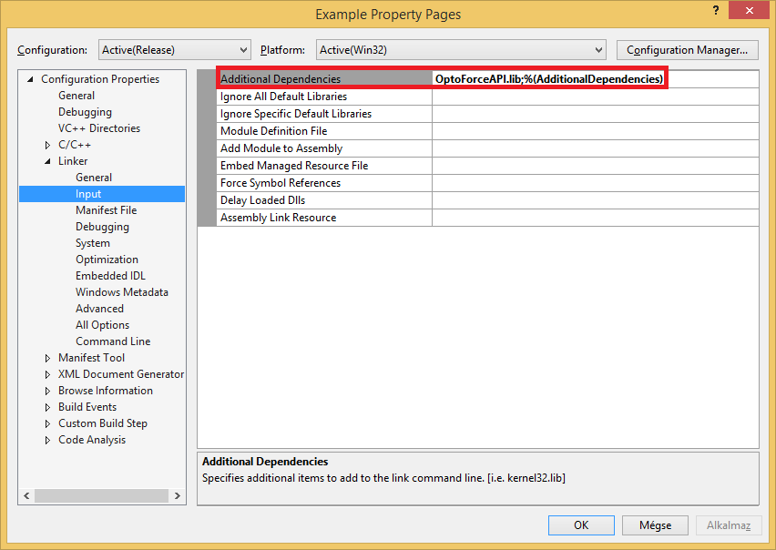
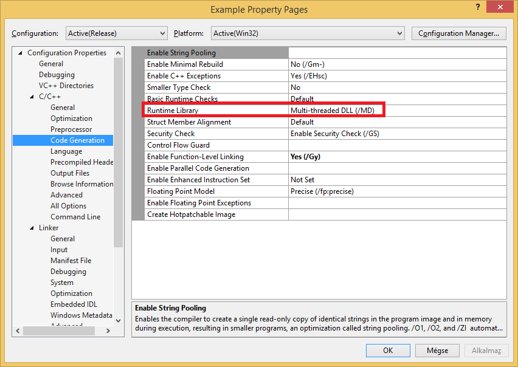
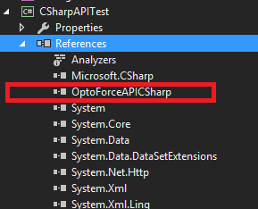
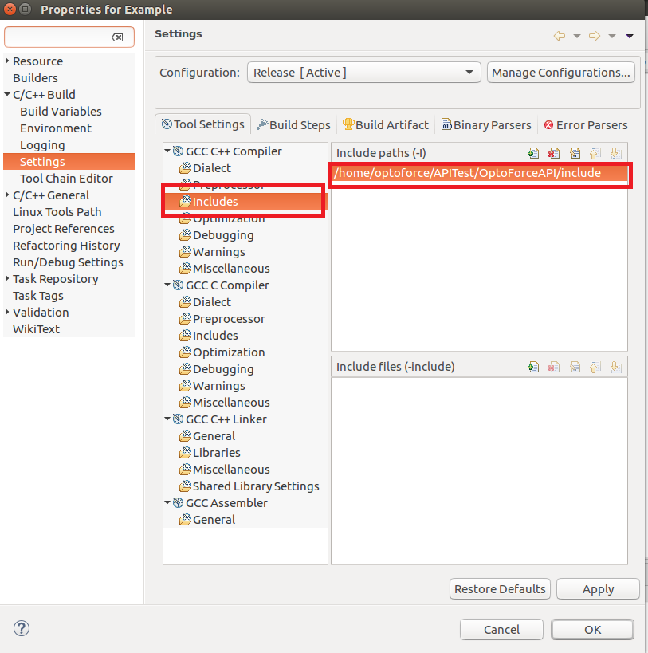
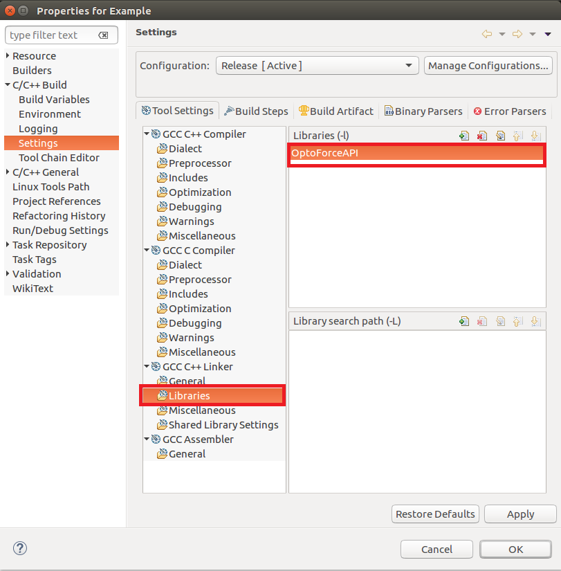

OptoForceAPI for C++ and C# development
Windows
Linux
The library is tested on:
-
Windows 8 (64bit)Visual Studio 2015
-
Ubuntu 16.04 (64bit, GCC Version: 4.8.2)
Setting up the environment in Microsoft Visual C++ 2015:
Set up the include directory and the library directory for the project (these can change according to the installation path you have chosen before):

Add the OptoForceAPI.lib to the additional dependencies:

Set the Runtime Library to multithreaded DLL:

Setting up the environment in Microsoft Visual C# 2015:
Add the OptoForceAPICSharp.dll as a reference:

To run the compiled application, you should use one of the 3 provided OptoForceAPI.dlls (e.g. copy it into the folder where the application is compiled)
Setting up the environment in Eclipse:
Copy the provided .so files to /usr/lib directory (libOptoForceAPI.so, libOptoForceAPI.so.2, libOptoForceAPI.so.2.0, libOptoForceAPI.so.2.0.0)
Set up the include directory for the project (this can change according to the installation path you have chosen before):

Add the OptoForceAPI to the Libraries

Compiling the example from command line:
g++ main.cpp -I../include/ -lOptoForceAPI -o example
#include <iostream>
#include "OptoDAQ.h"
#include "OptoDAQDescriptor.h"
#include "OptoPacket6D.h"
#include "OptoDAQWatcher.h"
int main()
{
while (count == 0) {
}
for (std::size_t i = 0; i < count; ++i) {
std::cout << "Information about Connected DAQ (" << i + 1 << "):" << std::endl;
std::cout <<
"Connected on port: "<<descriptors[i].
GetAddress()<<std::endl;
std::cout << "Protocol version: " << descriptors[i].GetProtocolVersion() << std::endl;
std::cout <<
"Type name:" << descriptors[i].
GetTypeName() << std::endl;
std::cout << "-----------------------" << std::endl;
}
for (std::size_t i = 0; i < count; ++i) {
bool success = daqs[i].
Open();
if (success == false) {
std::cout << i + 1 << ". DAQ could not be opened!" << std::endl;
continue;
}
if (success) {
std::cout << i + 1 << ". DAQ successfully configured." << std::endl;
}
else {
std::cout << i + 1 << ". DAQ could not be configured." << std::endl;
continue;
}
}
for (std::size_t i = 0; i < count; ++i) {
std::cout << "10 packets from DAQ " << i + 1 <<":" << std::endl;
if (daqs[i].IsValid()) {
}
std::size_t size = packets.GetSize();
for (std::size_t j = 0; j < size; ++j) {
}
}
packets.Clear();
}
delete[] daqs;
char ch;
std::cin >> ch;
return 0;
}
using System;
using System.Collections.Generic;
using System.Linq;
using System.Text;
using System.Threading;
using System.Threading.Tasks;
namespace CSharpAPITest
{
class Program
{
public static void SimpleTest()
{
do
{
}
while (OptoDAQDescriptor.
IsValid() ==
false);
if (optoDAQ.
Open() ==
false)
{
Console.WriteLine("Could not open DAQ...");
Console.ReadKey();
return;
}
do
{
{
{
for (int i = 0; i < (int)sensorCount; ++i)
{
Console.WriteLine(
"[SN:{0}] Fx: {1}; Fy {2}; Fz: {3}", i, simplePacket.
CountsFx[i], simplePacket.
CountsFy[i], simplePacket.
CountsFz[i]);
}
}
}
{
{
Console.WriteLine(
"Fx: {0}; Fy {1}; Fz: {2}", simplePacket.
Fx, simplePacket.
Fy, simplePacket.
Fz);
}
}
}
static void Main(string[] args)
{
SimpleTest();
}
}
}